1The problem
- Learned simulators (graph network simulators) are fast and differentiable, but must be told the material: stiffness, damping, thickness …
- In-context learning (MaNGO) infers the material from a few example trajectories, but needs mesh trajectories, which real sensors do not provide.
- Depth cameras give point clouds, with no correspondences between frames.
2How PEACH works
- Observe 1–8 point cloud sequences of the target process, e.g. with a depth camera.
- Encode each sequence as one point cloud in 4D space-time: FPS + kNN patches, a PointMAE tokenizer on Fourier features and one transformer layer.
- Aggregate the sequence codes with a learned softmax into one latent material description r.
- Simulate the whole trajectory in one forward pass with the MaNGO graph network simulator, conditioned on r and an initial mesh.
Trained end-to-end in simulation, with point cloud augmentation (noise, region dropout, outliers) for sim-to-real.
3Space-time patches
Time is normalized and scaled by τ. Patches then group points that are close in space and time, so motion becomes visible without point correspondences.
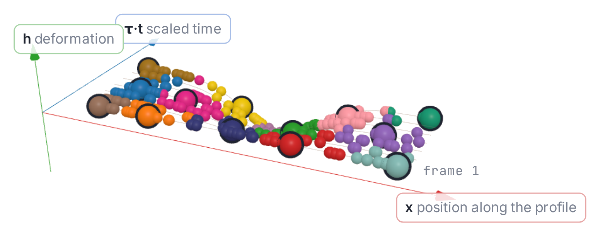
time barely counts: patches mix several frames
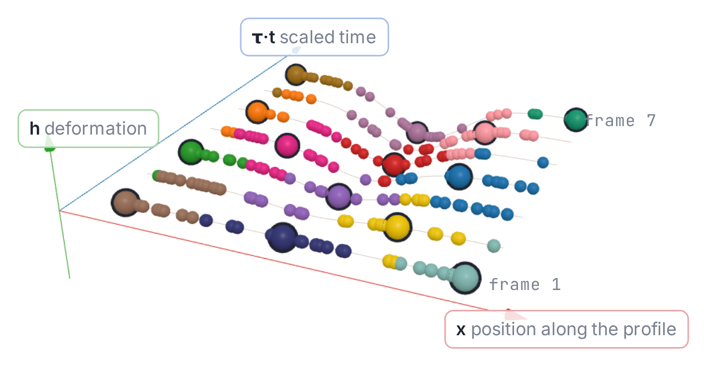
patches are local in space and time
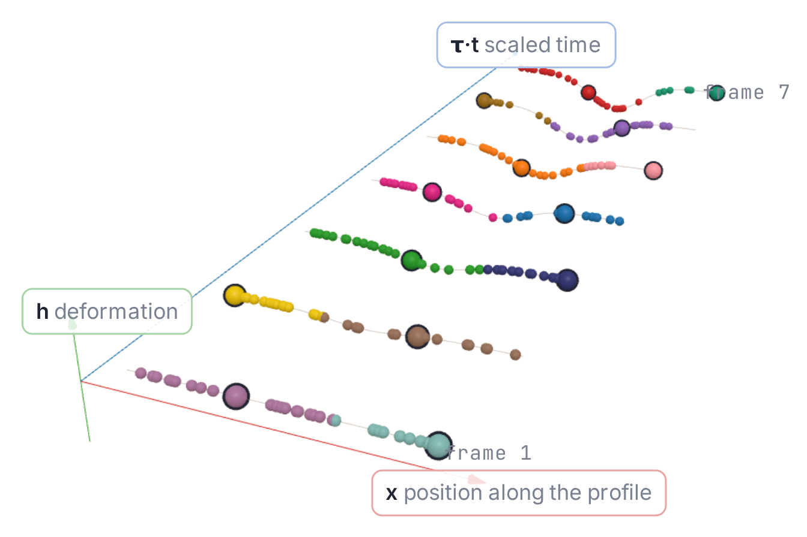
one frame per patch: motion is invisible to a single patch
4Auxiliary losses (training only)
- Material regression: a small MLP predicts the physical parameters from r. It grounds the latent space and doubles as system identification.
- Signed distance field: query points predict their distance to the mesh surface from nearby patch tokens. This keeps geometric detail in the tokens and needs geometry only.
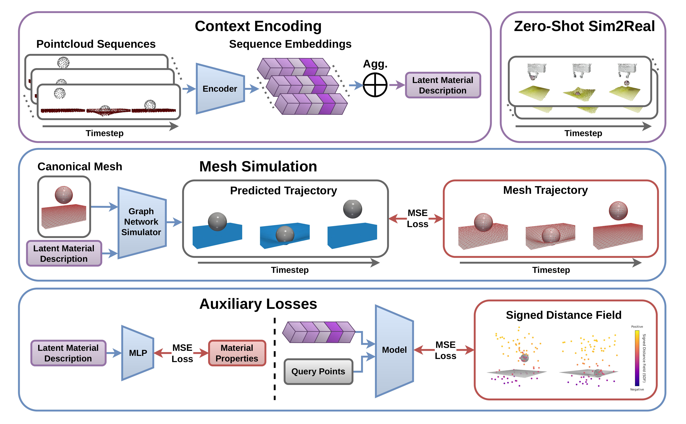
plus one initial mesh
zero-shot sim-to-real
at maximal sheet stretching
0.58 s vs. 82 s
5Zero-shot sim-to-real
A robot drops balls of different size and weight onto latex sheets of different thickness. Only stereo-camera point clouds are recorded; PEACH was trained purely in simulation.
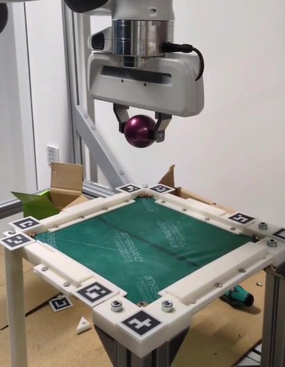
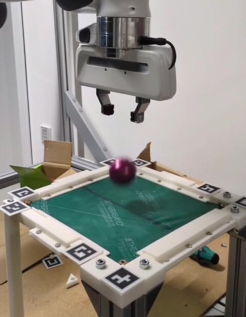
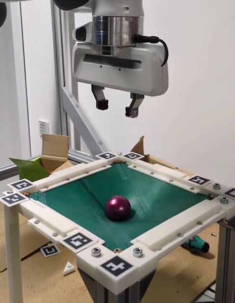
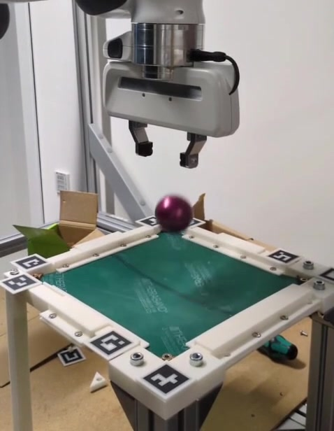
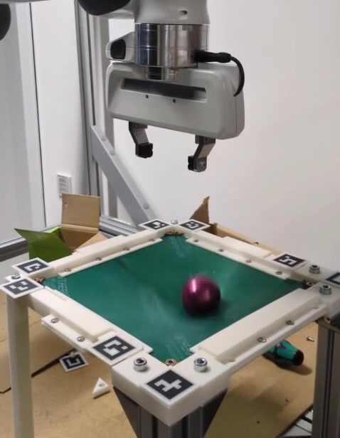
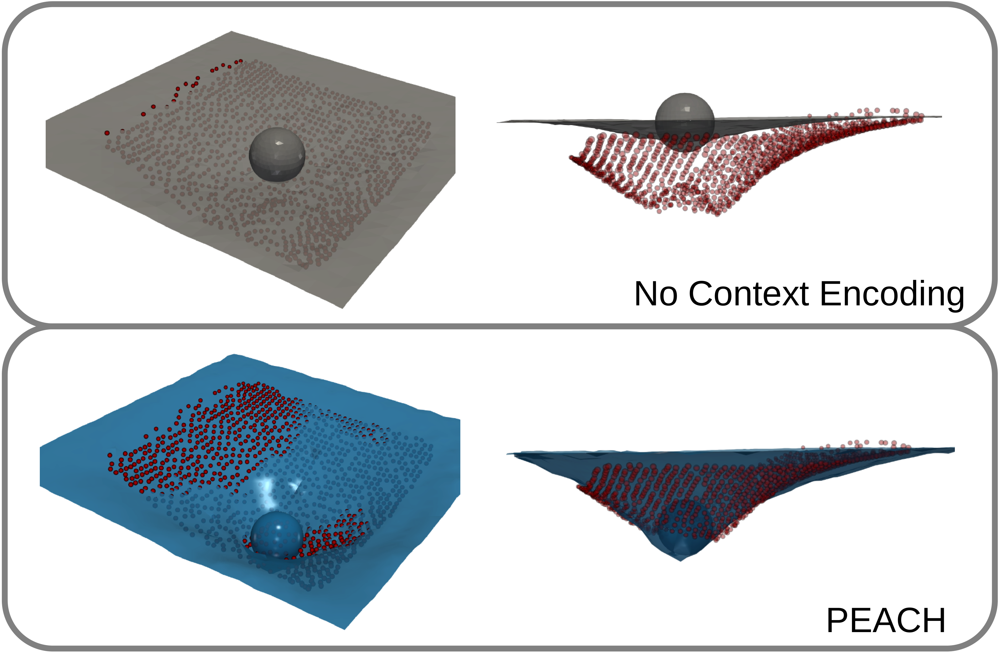
6Simulation results
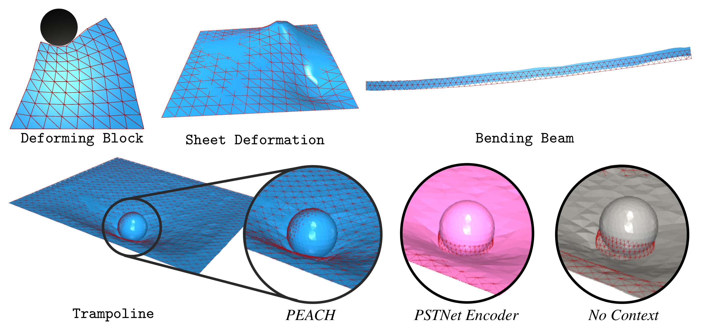
Full rollout MSE with 8 context trajectories (log scale, lower is better). PEACH beats all learned point cloud encoders and is on par with mesh-based MaNGO, which uses privileged mesh context.
No optimization loop: adapting and simulating one task takes 0.58 s, vs. 82 s for test-time optimization and 240 s for one FEM rollout.
7Structured latent space
Pairwise distances between tasks in the latent space r follow their distances in physical parameters ρ. Darker hexagons hold more task pairs.